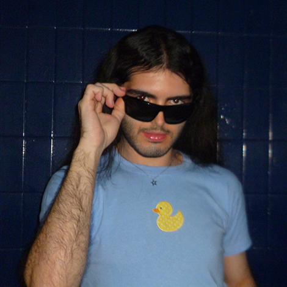

Rodrigo Ezequiel Nuñez

¡Hola! Soy Rodrigo, pero todos me dicen rodri. Soy estudiante de la Licenciatura en Diseño y Comunicación Visual en la Universisad Nacional de Lanús. Soy un apasionado del diseño, la comunicación y la cultura pop. Me inspiran los colores, la moda, la música y las películas para crear ideas y proyectos audiovisuales que conecten con el público. También disfruto cocinar, explorar nuevos sabores y combinar creatividad y funcionalidad, comprometerme con lo que hago y buscar siempre crecer, aprender y dar lo mejor de mí. No me conformo con hacer las cosas de manera superficial: valoro la dedicación, la práctica y la mejora constante.
★ Experiencia Laboral
- Auxiliar Docente de la materia Comunicación de la carrera Diseño y Comunicación Visual de UNLa (2025-presente)
- Organizador de Eventos Multitudinarios (2022-2023; 2024-presente)
- Gestor y Técnico de Proyectos Audiovisuales (2020-presente)
- Diseñador Freelance (2017-presente)
★ Conocimientos
- Nivel de Inglés Avanzado
- Manejo de Adobe Creative Cloud
- Adobe InDesign
- Adobe Photoshop
- Adobe Illustrator
- Edición de Video
- Cocina Gourmet
- Pastelería fina y tradicional
- Manejo de Google G Suite
- Fotografía
- Gestión de Redes Sociales
- Manejo de Indumentaria
★ Habilidades
- Comunicación bilingüe efectiva
- Trabajo en equipo
- Resolución de problemas
- Creatividad
- Adaptabilidad
- Liderazgo
- Gestión del tiempo
★ Educación
- Licenciatura en Diseño y Comunicación Visual - Universidad Nacional de Lanús (2021-Presente)
- Bachillerato en Ciencias Sociales - Colegio San Francisco Javier (2015-2020)